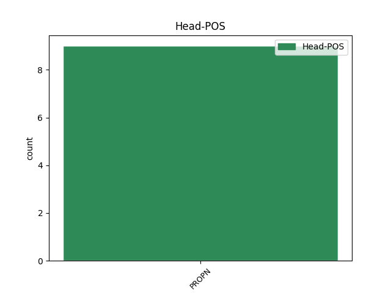

Distribution of features within this leaf

Agreement Rules sorted by frequency.
- When the dependent token is the flat multiword expression(flat) of the head token, and the dependent token is ADJ.
1 Co-dhiù _ _ _ _ 0 _ _ _
2 , _ _ _ _ 0 _ _ _
3 sa _ _ _ _ 0 _ _ _
4 bhliadhna _ _ _ _ 0 _ _ _
5 1258 _ _ _ _ 0 _ _ _
6 , _ _ _ _ 0 _ _ _
7 nuair _ _ _ _ 0 _ _ _
8 a _ _ _ _ 0 _ _ _
9 bhruidhinn _ _ _ _ 0 _ _ _
10 Dòmhnall Dòmhnall PROPN Nn-mn Case=Nom|Gender=Masc 0 _ _ _
11 Og og ADJ Aq-smn Case=Nom|Gender=Masc|Number=Sing 10 flat _ _
12 ' _ _ _ _ 0 _ _ _
13 tria _ _ _ _ 0 _ _ _
14 san _ _ _ _ 0 _ _ _
15 nGaoidhilcc _ _ _ _ 0 _ _ _
16 nAlbanaigh _ _ _ _ 0 _ _ _
17 ' _ _ _ _ 0 _ _ _
18 , _ _ _ _ 0 _ _ _
19 tha _ _ _ _ 0 _ _ _
20 e _ _ _ _ 0 _ _ _
21 soilleir _ _ _ _ 0 _ _ _
22 gu _ _ _ _ 0 _ _ _
23 robh _ _ _ _ 0 _ _ _
24 roinn _ _ _ _ 0 _ _ _
25 eadar _ _ _ _ 0 _ _ _
26 cainnt _ _ _ _ 0 _ _ _
27 Alba _ _ _ _ 0 _ _ _
28 agus _ _ _ _ 0 _ _ _
29 cainnt _ _ _ _ 0 _ _ _
30 Èirinn _ _ _ _ 0 _ _ _
31 da-rìribh _ _ _ _ 0 _ _ _
32 . _ _ _ _ 0 _ _ _
Disagree Examples:
1 A _ _ _ _ 0 _ _ _
2 - _ _ _ _ 0 _ _ _
3 réir _ _ _ _ 0 _ _ _
4 coltais _ _ _ _ 0 _ _ _
5 , _ _ _ _ 0 _ _ _
6 chaidh _ _ _ _ 0 _ _ _
7 an _ _ _ _ 0 _ _ _
8 sgeulachd _ _ _ _ 0 _ _ _
9 seo _ _ _ _ 0 _ _ _
10 a _ _ _ _ 0 _ _ _
11 dhealbh _ _ _ _ 0 _ _ _
12 an _ _ _ _ 0 _ _ _
13 toiseach _ _ _ _ 0 _ _ _
14 an _ _ _ _ 0 _ _ _
15 Èirinn _ _ _ _ 0 _ _ _
16 anns _ _ _ _ 0 _ _ _
17 an _ _ _ _ 0 _ _ _
18 t-siathamh _ _ _ _ 0 _ _ _
19 ceud _ _ _ _ 0 _ _ _
20 deug _ _ _ _ 0 _ _ _
21 an _ _ _ _ 0 _ _ _
22 uair _ _ _ _ 0 _ _ _
23 a _ _ _ _ 0 _ _ _
24 bha _ _ _ _ 0 _ _ _
25 cuid _ _ _ _ 0 _ _ _
26 de _ _ _ _ 0 _ _ _
27 na _ _ _ _ 0 _ _ _
28 h-uaislean _ _ _ _ 0 _ _ _
29 Èireannach _ _ _ _ 0 _ _ _
30 a _ _ _ _ 0 _ _ _
31 tha _ _ _ _ 0 _ _ _
32 air _ _ _ _ 0 _ _ _
33 an _ _ _ _ 0 _ _ _
34 ainmeachadh _ _ _ _ 0 _ _ _
35 innte _ _ _ _ 0 _ _ _
36 beò _ _ _ _ 0 _ _ _
37 fhathast _ _ _ _ 0 _ _ _
38 , _ _ _ _ 0 _ _ _
39 no _ _ _ _ 0 _ _ _
40 , _ _ _ _ 0 _ _ _
41 faodaidh _ _ _ _ 0 _ _ _
42 e _ _ _ _ 0 _ _ _
43 bhith _ _ _ _ 0 _ _ _
44 , _ _ _ _ 0 _ _ _
45 goirid _ _ _ _ 0 _ _ _
46 an _ _ _ _ 0 _ _ _
47 déidh _ _ _ _ 0 _ _ _
48 am _ _ _ _ 0 _ _ _
49 bàis _ _ _ _ 0 _ _ _
50 - _ _ _ _ 0 _ _ _
51 urrachan _ _ _ _ 0 _ _ _
52 móra _ _ _ _ 0 _ _ _
53 mar _ _ _ _ 0 _ _ _
54 a _ _ _ _ 0 _ _ _
55 bha _ _ _ _ 0 _ _ _
56 Aodh _ _ _ _ 0 _ _ _
57 Dubh _ _ _ _ 0 _ _ _
58 O _ _ _ _ 0 _ _ _
59 Domhnaill _ _ _ _ 0 _ _ _
60 , _ _ _ _ 0 _ _ _
61 Seathan Seathan PROPN Nn-mn Case=Nom|Gender=Masc 0 _ _ _
62 Mac _ _ _ _ 0 _ _ _
63 an an DET Tdsmg Case=Gen|Gender=Masc|Number=Sing 61 flat _ _
64 Iarla _ _ _ _ 0 _ _ _
65 , _ _ _ _ 0 _ _ _
66 agus _ _ _ _ 0 _ _ _
67 O _ _ _ _ 0 _ _ _
68 Conchobhair _ _ _ _ 0 _ _ _
69 . _ _ _ _ 0 _ _ _
1 Ann _ _ _ _ 0 _ _ _
2 an _ _ _ _ 0 _ _ _
3 1969 _ _ _ _ 0 _ _ _
4 agus _ _ _ _ 0 _ _ _
5 anns _ _ _ _ 0 _ _ _
6 na _ _ _ _ 0 _ _ _
7 bliadhnachan _ _ _ _ 0 _ _ _
8 a _ _ _ _ 0 _ _ _
9 lean _ _ _ _ 0 _ _ _
10 suas _ _ _ _ 0 _ _ _
11 gu _ _ _ _ 0 _ _ _
12 1975 _ _ _ _ 0 _ _ _
13 , _ _ _ _ 0 _ _ _
14 recòrd _ _ _ _ 0 _ _ _
15 mi _ _ _ _ 0 _ _ _
16 fhèin _ _ _ _ 0 _ _ _
17 agus _ _ _ _ 0 _ _ _
18 Aonghas _ _ _ _ 0 _ _ _
19 Iain _ _ _ _ 0 _ _ _
20 Dòmhnallach _ _ _ _ 0 _ _ _
21 àireamh _ _ _ _ 0 _ _ _
22 de _ _ _ _ 0 _ _ _
23 ghabhail _ _ _ _ 0 _ _ _
24 de _ _ _ _ 0 _ _ _
25 an _ _ _ _ 0 _ _ _
26 sgeulachd _ _ _ _ 0 _ _ _
27 o _ _ _ _ 0 _ _ _
28 Dhòmhnall _ _ _ _ 0 _ _ _
29 Alasdair _ _ _ _ 0 _ _ _
30 Seonstan _ _ _ _ 0 _ _ _
31 ( _ _ _ _ 0 _ _ _
32 Dòmhnall Dòmhnall PROPN Nn-mn Case=Nom|Gender=Masc 0 _ _ _
33 Alasdair _ _ _ _ 0 _ _ _
34 mac _ _ _ _ 0 _ _ _
35 Iain _ _ _ _ 0 _ _ _
36 Mhóir mór ADJ Aq-smg Case=Gen|Gender=Masc|Number=Sing 32 flat _ _
37 'ic _ _ _ _ 0 _ _ _
38 Dhòmhnaill _ _ _ _ 0 _ _ _
39 'ic _ _ _ _ 0 _ _ _
40 lain _ _ _ _ 0 _ _ _
41 'ic _ _ _ _ 0 _ _ _
42 Ràghaill _ _ _ _ 0 _ _ _
43 ) _ _ _ _ 0 _ _ _
44 , _ _ _ _ 0 _ _ _
45 sgeulaiche _ _ _ _ 0 _ _ _
46 barraichte _ _ _ _ 0 _ _ _
47 a _ _ _ _ 0 _ _ _
48 bha _ _ _ _ 0 _ _ _
49 fuireach _ _ _ _ 0 _ _ _
50 anns _ _ _ _ 0 _ _ _
51 an _ _ _ _ 0 _ _ _
52 Aird _ _ _ _ 0 _ _ _
53 Mhóir _ _ _ _ 0 _ _ _
54 , _ _ _ _ 0 _ _ _
55 faisg _ _ _ _ 0 _ _ _
56 air _ _ _ _ 0 _ _ _
57 an _ _ _ _ 0 _ _ _
58 Ìochdar _ _ _ _ 0 _ _ _
59 an _ _ _ _ 0 _ _ _
60 Uibhist _ _ _ _ 0 _ _ _
61 a _ _ _ _ 0 _ _ _
62 Deas _ _ _ _ 0 _ _ _